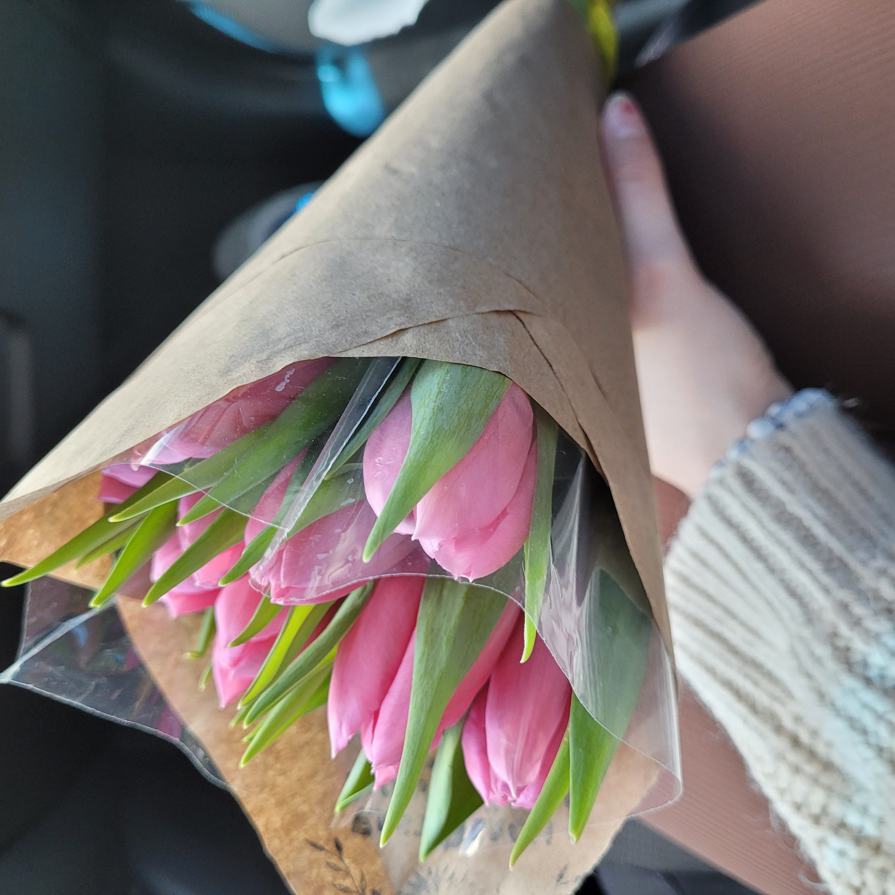

Photography Collection 002
Soft Moments
This photograph was inspired by quiet, intimate moments and the subtle beauty found in everyday gestures. Captured in a natural setting, the focus is on the softness of the pink tulips contrasted against the muted tones of the background, creating a calm and delicate atmosphere. The composition highlights my attention to detail through the use of close framing and depth. The bouquet is positioned off-center, guiding the viewer’s eye naturally across the image, while the blurred background helps isolate the subject and enhance its presence. The diagonal lines created by the wrapping and stems add movement, while the soft lighting emphasizes texture and color. This piece reflects my ability to capture emotion through simplicity, using composition and color to create a visually gentle and engaging image.